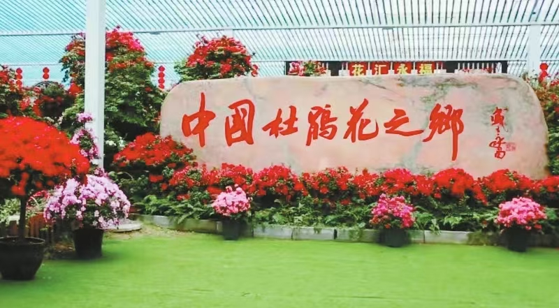

| 返回个人主页 |
| 鲜花产业 |
|  |
近年来，漳平市加快推进联动推广试点，立足木竹花卉资源产业发展优势，以科技创新为驱动，以科技推广为抓手，以科技服务为平台，用科技“三项”加快构建现代林业产业体系，实现林业产业提档升级。2023年，漳平市林业总产值达97.86亿元，增长5.2%，今年二季度全市木竹加工产值达28.6亿元，增幅高于全省平均水平。 以科技创新为驱动，促进木竹产业提质增效。漳平强化政策保障，推动竹业智能化改造提升，漳平专门成立了“漳平市竹业开发研究中心”，出台“漳平市林业高质量发展三年行动计划”“竹产业一二三产业融合发展重点县项目实施方案”等政策。突出数字赋能，建设并应用“5G+数字工厂”技术，利用现代化管理技术，优化木竹加工企业的原材料数字化管理水平。漳平市德诺林业有限公司通过数字化技术，2023年实现产值2.84亿元，同比增长5.3%。打造示范基地，组建“竹资源高效培育与利用协同创新中心”，在桂林街道黄祠村打造竹林科普示范基地，设立15种竹林科普经营区，营建高产高效毛竹林示范片350亩。建立竹林经营碳汇示范基地面积160亩，积极开展彩叶桂花等新品种研发品种。 |
| 茶产业 |
近年来，漳平市统筹做好茶文化、茶产业、茶科技这篇大文章，一方面出台扶持政策，在用地、金融和人才等方面支持茶产业，开辟发展快速通道；另一方面抢抓水仙茶制作技艺入选国家级非物质文化遗产名录机遇，不断擦亮“中国名茶之乡”“全国重点产茶县”名片，精进制作技艺。2024年2月，漳平南洋水仙茶第四代传承人张兴裕入选国家级非遗代表性传承人公示名单。目前，漳平已培育众多人才，包括41名漳平籍非遗传承人、3名制茶高级工程师、1名国家级乡村工匠名师。 |